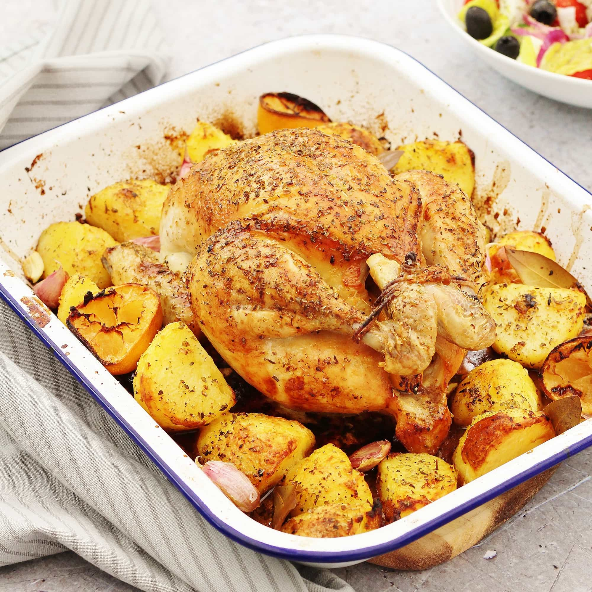

Greek lemon roast chicken with potatoes

Description
This Greek lemon chicken and potatoes is a one-pan meal that you'll make time and again. Roast chicken pieces and potatoes in an easy lemon marinade, then serve with plenty of tzatziki sauce and a Greek salad to make a delicious dinner.
Ingredients:
- 6 potatoes, medium-sized
- 4 tablespoon(s) olive oil
- Pepper
- Salt
- Thyme, fresh
- 3-4 clove(s) of garlic
- 1 chicken bouillon cube
- 1 teaspoon(s) oregano, dry
- Lemon juice, of 2 lemons
- Lemon zest, of 2 lemons
- 50 g olive oil
- 200 g water
- Thyme, fresh
- 40 g honey
- 60 g mustard, mild
- 1 chicken, cut into 8 portions
- 1 tablespoon(s) strained yogurt
Steps:
- Preheat oven to 200* C (390* F) Fan.
- Peel the potatoes and chop them into wedges.
- Place a frying pan over high heat and add olive oil.
- When it gets very hot, add the potatoes.
- Add salt, pepper, and a few sprigs of fresh thyme.
- Sauté until golden.
- When ready, transfer to an ovenproof baking dish and set aside until needed.
- Beat the garlic, bouillon cube, oregano, lemon rind, lemon juice, extra virgin olive oil, water, honey, mustard, and a generous amount of thyme in a food processor, until the garlic completely breaks down and all of the ingredients are combined.
- It is better to wear disposable gloves when working with raw chicken.
- Place the chicken in a large bowl and pour the marinade over it.
- Massage it onto the chicken until it is completely coated.
- You can cook it immediately or refrigerate and let it marinate for up to 1 ½ days. The longer you let the marinade work on the chicken, the tastier it will turn out!
- When ready to cook, place chicken over the potatoes in the baking dish.
- Drizzle any remaining marinade over the chicken and potatoes and cover with aluminum foil.
- Roast for 45 minutes, remove aluminum foil and roast for another 30-45 minutes, basting the chicken with the marinade and juices as often as possible.
- When ready, serve the chicken and the potatoes with Greek strained yogurt.